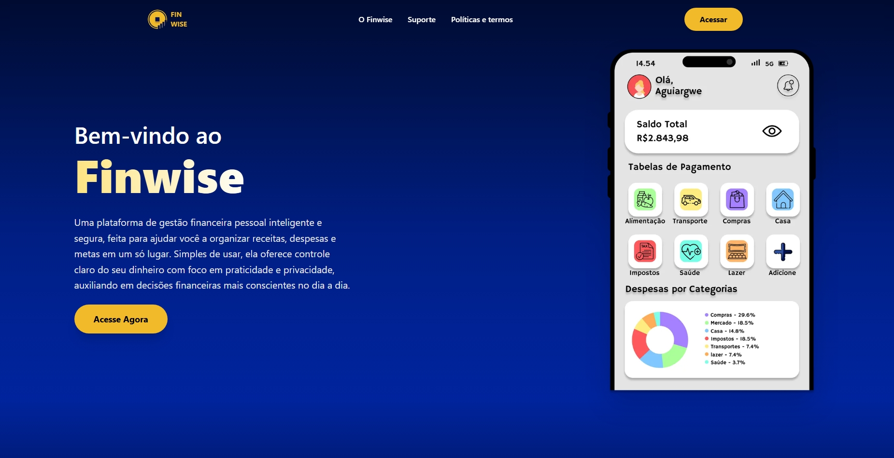
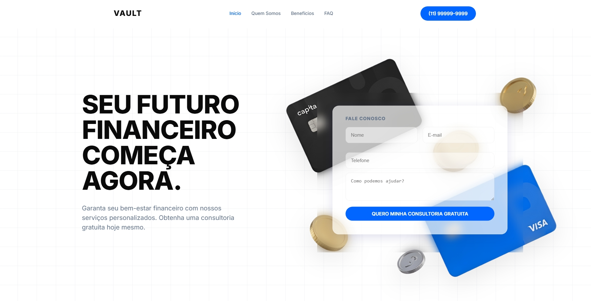
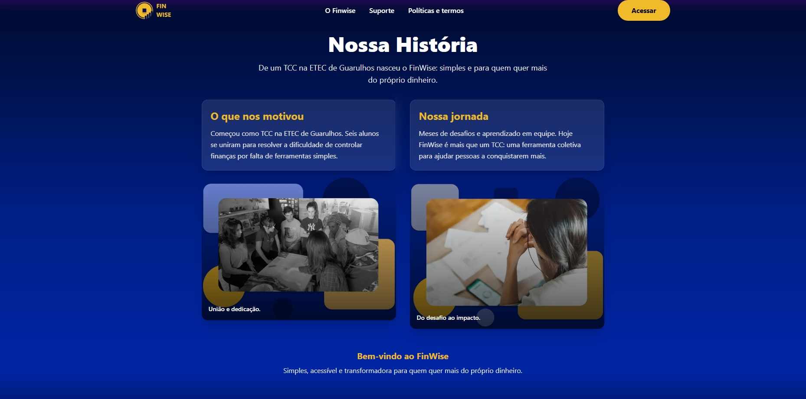
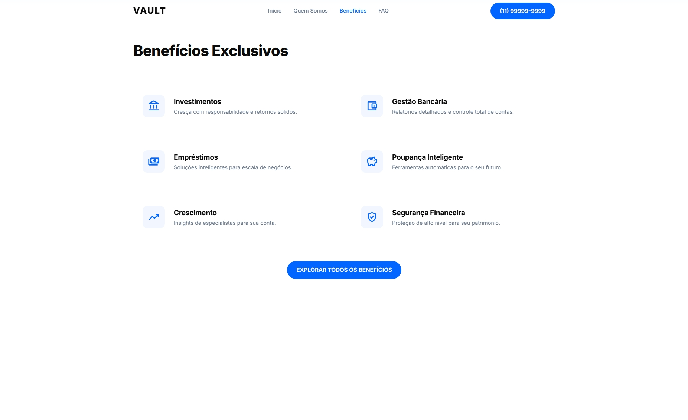
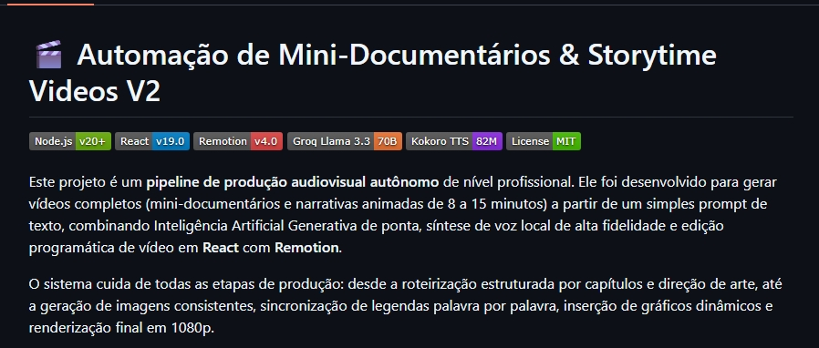
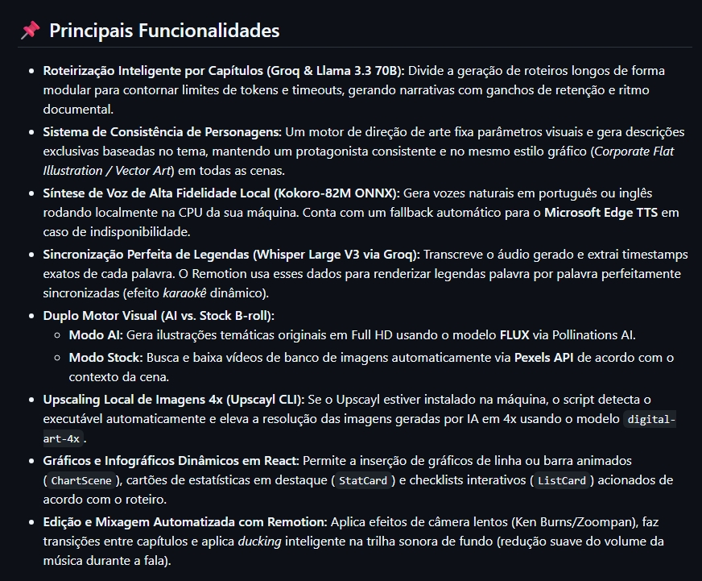
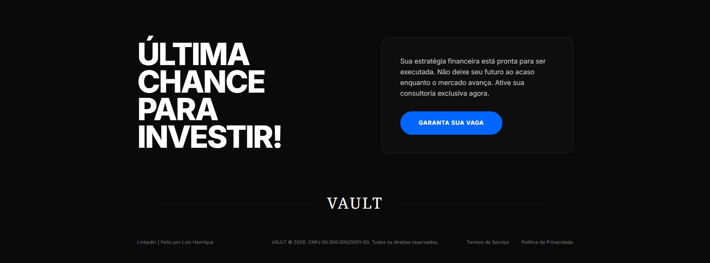
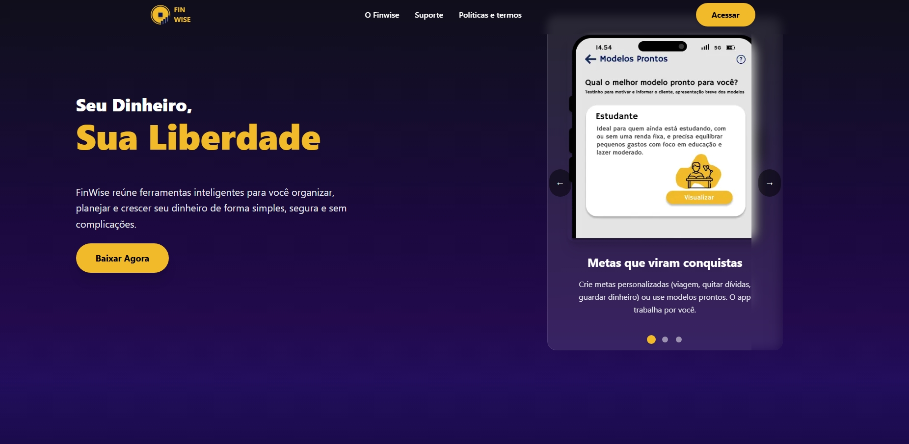

Front-end Development
Interfaces responsivas e acessiveis, construidas com atencao a performance, semantica e detalhes de interacao.
Interfaces digitais com clareza, ritmo e personalidade.
Desenvolvedor Front-end criando interfaces claras, funcionais e com personalidade.
Falar comigo ↗







Com mais de cinco anos em design e tecnologia, foco em branding, web design e experiencias digitais. Gosto de trabalhar com negocios que querem se destacar e apresentar sua melhor imagem. Vamos construir algo incrivel juntos.
Conhecer meu trabalho ↗Interfaces responsivas e acessiveis, construidas com atencao a performance, semantica e detalhes de interacao.
Layouts modernos e conversao-focused com hierarquia visual, tipografia e experiencia de usuario bem resolvidas.
Organizacao de fluxos, componentes e prototipos que transformam necessidades reais em produtos simples de usar.
Identidades visuais coesas, do conceito aos sistemas digitais, para marcas que precisam ser lembradas.
Processos digitais mais eficientes usando JavaScript, Python, IA e ferramentas que reduzem trabalho repetitivo.
Atendimento, comunicacao com clientes e suporte ao processo de vendas.
Organizacao, identificacao de encomendas, separacao e transporte interno.
Desenvolvimento de site estatico para melhorar a presenca digital de uma marca.
Aplicacao de controle financeiro pessoal desenvolvida com foco em clareza visual, organizacao de conteudo e uma experiencia fluida para o usuario.
Interface web desenvolvida como freelancer, com identidade visual propria e foco em apresentar servicos financeiros de forma clara e responsiva.
Automacao para producao de conteudo em video que integra LLM, web scraping e Remotion para reduzir etapas manuais e repetitivas do processo.
Formacao principal: Tecnologia em Analise e Desenvolvimento de Sistemas — IFSP Guarulhos (2024 – em andamento).
Tecnico em Desenvolvimento de Sistemas — Etec de Guarulhos (concluido).
Momentos fora da rotina de estudos e projetos que tambem fazem parte de quem eu sou.
Uma viagem marcada por praia, natureza e um respiro fora da rotina de estudos e projetos.
Trocar uma ideia ↗Estou em busca de uma oportunidade como Desenvolvedor Junior e aberto a projetos que tenham um desafio interessante.